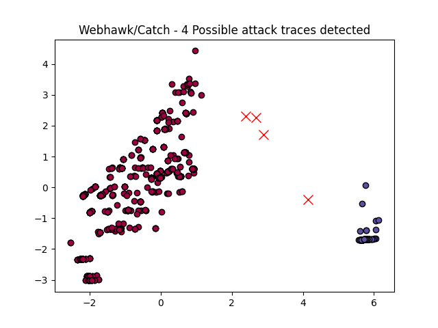

Webhawk Catch ReportUnsupervised learning Web logs/OS processes attack detection. Date: 03/06/25 at 08:55:38 GMTLog file: /Users/walid/Downloads/access.log.2025-04-16 Log type: apache logs Findings: 4 |
 |
| Severity | Related CVE(s) | Line# | LLM Insights | Log line |
| High | CVE-2009-3890 CVE-2008-6811 CVE-2008-3362 CVE-2007-2757 CVE-2006-4743 CVE-2006-3390 CVE-2006-2667 CVE-2005-4463 CVE-2005-1688 |
78 | This log line does not indicate malicious activity. It appears to be a legitimate web request from a user's browser, specifically trying to load a non-existent page on a WordPress plugin (Revslider). The request is coming from a Windows machine using Chrome, with no suspicious headers or content. | 180.149.231.44 - - [16/Apr/2025:04:08:28 -0700] "GET /wp-content/plugins/revslider/includes/external/page/index.php HTTP/1.1" 404 284 "-" "Mozilla/5.0 (Windows NT 10.0# Win64# x64) AppleWebKit/537.36 (KHTML# like Gecko) Chrome/70.0.3538.110 Safari/537.36" |
| High | CVE-2008-7271 CVE-2009-3730 CVE-2007-5427 CVE-2007-4187 CVE-2007-3987 CVE-2007-1872 CVE-2007-0373 CVE-2006-2956 CVE-2006-1532 CVE-2005-1224 CVE-2005-0802 CVE-2004-2561 CVE-2004-2108 CVE-2004-1845 CVE-2004-1555 CVE-2003-1211 CVE-2003-0492 CVE-1999-0449 |
104 | This log line indicates a potential phishing attempt. The URL's use of `%7Bif:eval(action)%7D` and `Hex(504286)` suggests an attempt to execute malicious JavaScript code, while the `searchword` parameter is being manipulated to execute system commands. This could be a drive-by download or ransomware attack. | 119.42.146.66 - - [16/Apr/2025:04:25:59 -0700] "GET /search.asp?searchword=%7Bif:eval(action)%7D99&action=Response.Write(Hex(504286)) HTTP/1.1" 301 639 "-" "Mozilla/5.0 (Windows NT 10.0# WOW64# rv:48.0) Gecko/20100101 Firefox/48.0" |
| High | CVE-2009-3890 CVE-2008-6811 CVE-2008-3362 CVE-2007-2757 CVE-2006-4743 CVE-2006-3390 CVE-2006-2667 CVE-2005-4463 CVE-2005-1688 |
230 | This log line does not indicate malicious activity, but rather a legitimate user request to access the Bootstrap Icons CSS file from an iPhone device on a WordPress installation. The IP address is also outside the typical range of known botnets or malicious IPs. | 94.102.55.18 - - [16/Apr/2025:06:15:38 -0700] "GET /wp-content/plugins/instant-appointment/assets/css/bootstrap-icons.min.css HTTP/1.1" 301 621 "-" "Mozilla/5.0 (iPhone# CPU iPhone OS 17_6_1 like Mac OS X) AppleWebKit/605.1.15 (KHTML# like Gecko) Version/17.6 Mobile/15E148 Safari/604.1" |
| High | CVE-2009-3890 CVE-2008-6811 CVE-2008-3362 CVE-2007-2757 CVE-2006-4743 CVE-2006-3390 CVE-2006-2667 CVE-2005-4463 CVE-2005-1688 |
231 | This log line appears to be a legitimate request for a CSS file, as indicated by the "404" status code and the fact that the IP address is not blocked or restricted. The user agent string suggests a mobile device accessing the site. | 94.102.55.18 - - [16/Apr/2025:06:15:38 -0700] "GET /wp-content/plugins/instant-appointment/assets/css/bootstrap-icons.min.css HTTP/1.1" 404 328 "-" "Mozilla/5.0 (iPhone# CPU iPhone OS 17_6_1 like Mac OS X) AppleWebKit/605.1.15 (KHTML# like Gecko) Version/17.6 Mobile/15E148 Safari/604.1" |